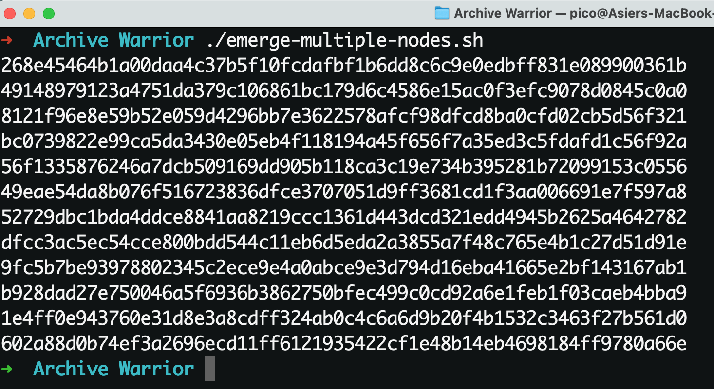
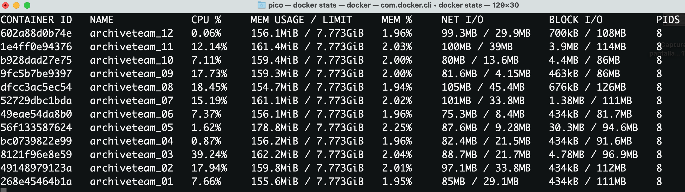

Multiply your Archive Team Warriors with Docker and some little scripting
The Archive Team plays a crucial role in preserving online content, and its significance becomes even more pronounced when considering platforms like Reddit, which may be prone to vanishing due to their very questionable practices. Without further ado let’s explain how this works.
The warrior runs on your computer and connects to the Archive Team server. It receives instructions on which websites to archive and contributes to the archiving process. Whenever a new archiving project is launched, the server assigns specific tasks to each Warrior. The Warrior downloads the assigned web content and sends it back to the server for permanent storage. With Docker and the power of scripting, we can create multiple containers easily, thus creating lots of warriors.
To achieve this, I’ll make use of a script that generates the desired number of containers. Additionally, the number of jobs each container can handle can be adjusted, the limit being 6. If you wish to contribute even more, the script can be easily modified to automatically create additional containers.
#!/bin/zsh
for i in {01..12}; do docker run -d –name archiveteam_$i
–env DOWNLOADER=“Pico” –env SELECTED_PROJECT=“reddit”
–env CONCURRENT_ITEMS=“6”
-p 80$i:8001 –restart=unless-stopped
-e PUID=1002 -e PGID=1002 atdr.meo.ws/archiveteam/warrior-dockerfile:latest done
In the provided example, the script will create a new container every iteration until it reaches the indicated number of containers, each named according to the iteration number. The script will also set relevant environment variables, such as the contributor’s name and the project you wish to collaborate on. For demonstration purposes, I’ve selected Reddit as the project and set the maximum number of workers per container.
The script will automatically assign ports to the containers by combining the number 80 with the corresponding container number, thus managing to assign a port to each container in a logical and orderly manner. Finally, it will create and assign a process to fetch the container, achieving the same functionality as a “FROM” statement in a Dockerfile.
After assigning execution permissions to the script using the command chmod +x, it can be fired up like thís ./<script-name.sh>.

To visualize the container usage statistics, the docker stats command can be used. It provides valuable information on resource consumption, including CPU usage, memory utilization, and more importantly, network activity.

Notice that each of the containers has uploaded an average of 35MB worth of data in about 5 minutes.
If you want to compare your effort against the rest of the contributors, the dashboard provides a link that heads to the leaderboard:
This is my current rating at the time of writing:
Good luck, and may the best win!